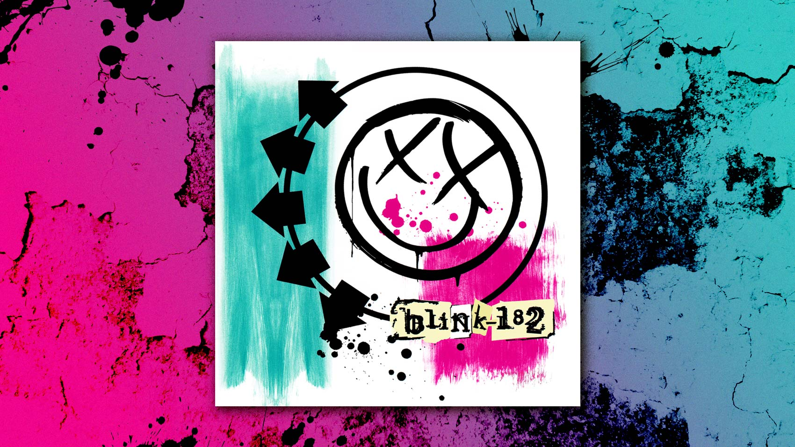

Music
Before this year took a turn I was going to concerts regularly.
I had just seen Switchfoot and God Smack in October and November of 2019 and was waiting
for new concerts to come up that we liked. One of my favorite bands is Blink 182. I was lucky
and saw them live back in 2016 even though they had already replaced Tom Delong.
